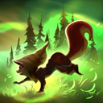

Scurry
Hoodwink passively has a chance to evade physical attacks while near trees. When activated, Hoodwink gains bonus movement speed, attack and cast range, phased movement, and tree-walking for a brief time.
- EVASION RADIUS: 275
- BONUS MOVEMENT SPEED: 20% / 25% / 30% / 35%
- BUFF DURATION: 3.5 / 4 / 4.5 / 5